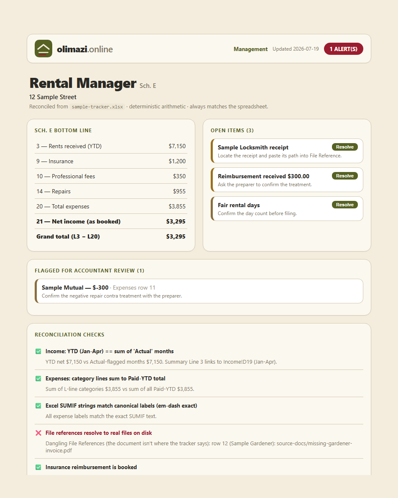

Tile framing — round 2
Three directions that are actually different from the floating plate you're running now, not variations of it. Each is shown on a Method Effects photo (left) and a Rental Manager screenshot (right), then again as a 12-up grid, because “View all” is where the last framing nearly locked the machine up.
D · Ink bleed
the reckon.house lookThe photo keeps its clean rounded edge, but a slightly larger copy of the same image sits behind it, clipped to a ragged blot. The picture appears to soak into the page. On a screenshot it is quieter, because the screenshot's own edges are pale.
Cost: one extra painted layer per tile, one static mask, zero filter:
calls — the raggedness and its falloff are baked into the mask, not computed
at runtime. Twelve tiles in grid mode is twelve extra background paints, no compositor
layers, no animation.
The decision: as shipped that way, the bleed is a legible copy of the photo
rather than ink. Hit D: blur the bleed in the toolbar to see the real thing.
That version costs one live filter: blur(16px) per tile — twelve of
them in grid mode. Blur alone did not cause the earlier lockup (that was infinite
animation plus will-change), but it is the expensive half, and you should
pick it knowing that. Toggle it on and off over the 12-up grid below.
Catch: the image URL has to be repeated as an inline
style="--bleed:url(...)" on each slide, because CSS can't read an
<img> src. That's an attribute, so the content build is unaffected.


E · Deckle edge
torn paperNo frame at all. The image itself is torn out — a rough edge on all four sides, with a paper-toned offset behind it doing the job the drop shadow used to do. More physical than D and more opinionated: it says these are prints, not screens. Screenshots suffer slightly, since a torn edge on a UI capture is a deliberate contradiction.
Cost: one mask on the image and one on the paper offset. Zero filters.
Cheapest of the three at 12 tiles.
Catch: a masked element cannot cast a CSS box-shadow — the shadow
would trace the original rectangle. So the drop shadow you said you wanted to keep
is gone here, replaced by the offset tone. That's the trade.


F · Blueprint plate
uses the background you already haveThe opposite bet. Instead of dissolving the tile into the page, this treats each image as a numbered plate in a drawing set: hairline rule, registration ticks at two corners, and the caption as a drafting callout. It is the only one of the three that makes the equations behind the tiles look intentional rather than decorative, and the only one that treats a screenshot as well as it treats a photo.
Cost: nothing. No masks, no filters, no extra layers, no per-tile attributes.
Grid mode is exactly as expensive as an unstyled image. It also survives the theme
toggle for free, since every colour is already a token.
Catch: it's a step away from reckon.house, not toward it. If the ink look is
the actual goal, this isn't it.